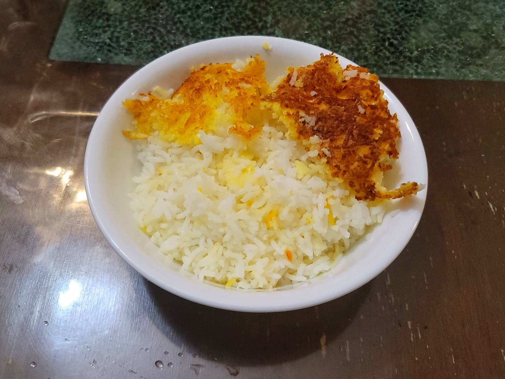

Persian Steamed Rice with Yogurt and Saffron TahDig

Ingredients:
Rice:
- 3 cups Basmati rice, rinsed
- 20~ cups Water
- 1/4 cup Salt
- 1/8 tsp Saffron, ground
TahDig:
- 1/2 cup Yogurt
- 1/8 tsp Saffron, ground
- 3 tbsp Canola oil
- 2 tbsp Butter
Instructions:
- Add water to a 6 quart pot up to 2 inches from the top, roughly 20 cups. Add the salt and bring to a boil. Then add the rice and parboil for 7-10 minutes, or until a grain of rice is soft on the edges but still firm in the center. Then strain out the rice and rinse with cold water to stop the cooking.
- In a bowl, combine 1 cup of the parboiled rice, the yogurt, and the saffron. Stir to combine.
- Add the oil and butter to the empty pot over medium low. Preferably, use a heat diffuser under the pot for a more even tahdig. Once melted, add in the yogurt mixture in an even layer. Then pile on the rest of the parboiled rice in the center to form a mountain like shape. Sprinkle over the remaining saffron. Cover with a towel lined lid and let cook for about 45-60 minutes, or until the rice grains are soft and the tahdig is light golden brown.
- Flip the pot onto a platter to serve. If it sticks to the bottom of the pot, you may have to scrape it off. Serve hot.